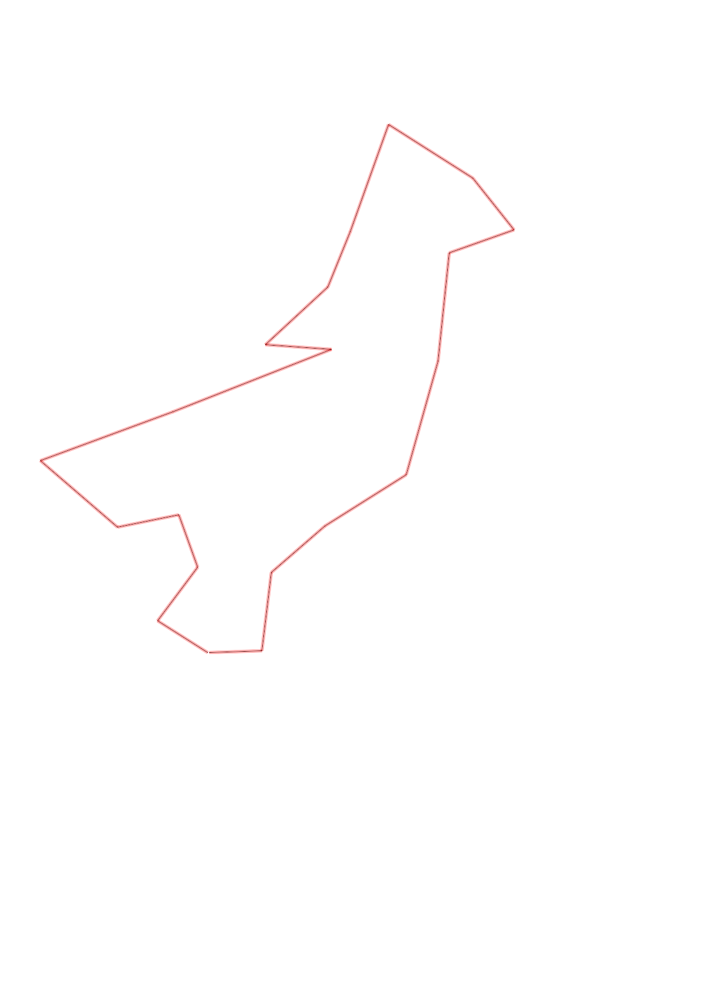
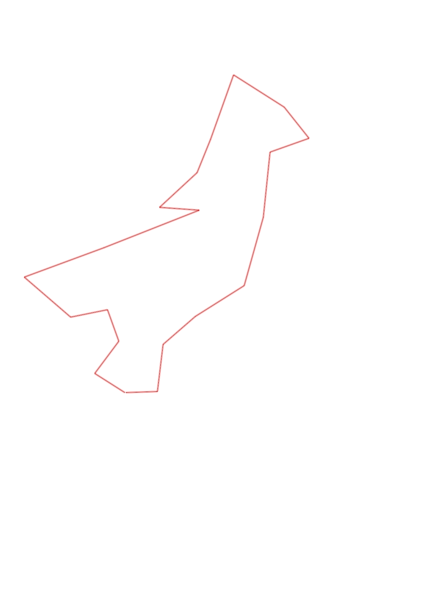

| Control |
Points |
Time Punched |
Distance |
Your Time |
Pace |
Place |
Fastest Time |
Median Time |
% Behind Fastest |
| 35 |
30 |
|
0.27 |
0:02:20 |
08:38 |
13 / 17 |
0:01:07 |
0:01:37 |
108% |
| 51 |
50 |
|
0.3 |
0:02:02 |
06:46 |
2 / 12 |
0:02:01 |
0:03:06 |
0% |
| 58 |
50 |
|
0.25 |
0:02:24 |
09:36 |
8 / 9 |
0:01:32 |
0:02:16 |
56% |
| 72 |
70 |
|
0.28 |
0:01:47 |
06:22 |
1 / 9 |
0:01:47 |
0:02:29 |
0% |
| 92 |
90 |
|
0.46 |
0:03:10 |
06:53 |
1 / 11 |
0:03:10 |
0:04:02 |
0% |
| 53 |
50 |
|
0.63 |
0:06:56 |
11:00 |
5 / 8 |
0:05:32 |
0:06:36 |
25% |
| 34 |
30 |
|
0.76 |
0:03:58 |
05:13 |
1 / 1 |
0:03:58 |
0:03:58 |
0% |
| 65 |
60 |
|
0.3 |
0:04:51 |
16:10 |
3 / 3 |
0:02:44 |
0:04:23 |
77% |
| 39 |
30 |
|
0.38 |
0:02:28 |
06:29 |
1 / 7 |
0:02:28 |
0:02:44 |
0% |
| 77 |
70 |
|
0.27 |
0:01:41 |
06:14 |
2 / 9 |
0:01:14 |
0:01:56 |
36% |
| 100 |
100 |
|
0.51 |
0:04:17 |
08:23 |
6 / 6 |
0:02:50 |
0:03:40 |
51% |
| 47 |
40 |
|
0.45 |
0:03:04 |
06:48 |
1 / 4 |
0:03:04 |
0:03:14 |
0% |
| 67 |
60 |
|
0.3 |
0:02:31 |
08:23 |
5 / 5 |
0:01:53 |
0:02:10 |
33% |
| 50 |
50 |
|
0.31 |
0:02:25 |
07:47 |
1 / 4 |
0:02:25 |
0:03:45 |
0% |
| 61 |
60 |
|
0.49 |
0:02:54 |
05:55 |
1 / 4 |
0:02:54 |
0:03:16 |
0% |
| 59 |
50 |
|
0.53 |
0:03:31 |
06:38 |
2 / 7 |
0:03:28 |
0:04:06 |
1% |
| 91 |
90 |
|
0.43 |
0:02:43 |
06:19 |
1 / 4 |
0:02:43 |
0:04:06 |
0% |
| 41 |
40 |
|
0.32 |
0:02:38 |
08:13 |
1 / 7 |
0:02:38 |
0:04:19 |
0% |
| 63 |
60 |
|
0.35 |
0:02:36 |
07:25 |
1 / 6 |
0:02:36 |
0:04:24 |
0% |
| Finish |
0 |
|
0.23 |
0:01:04 |
04:38 |
2 / 11 |
0:00:57 |
0:01:23 |
12% |
Total Distance Covered: 7.82km
Points Scored: 1080
Late Penalty: 0
Final Score: 1080
Total Time: 0hours 59minutes 20seconds
Efficiency: 138.11 points/km
 
